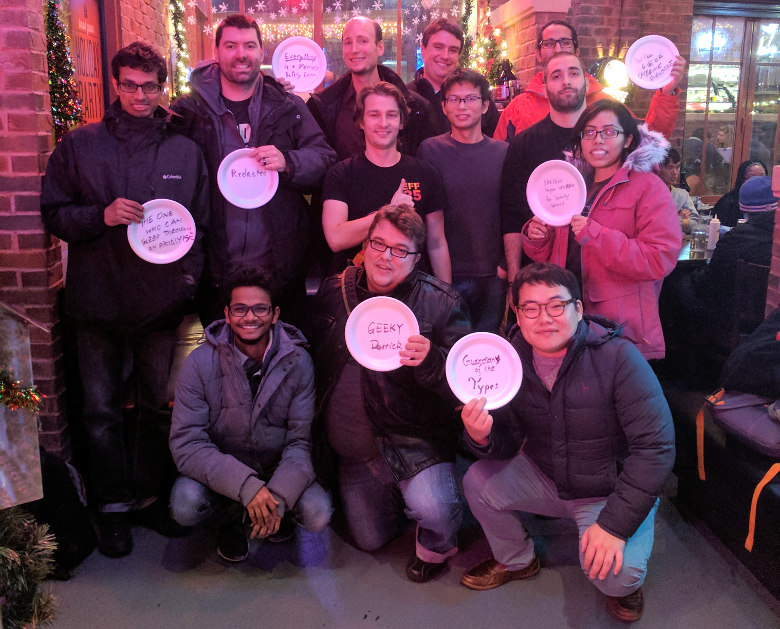

|

(Group picture, fall semester 2016.)
Faculty
Currently advised PhD students:
- Scott Carr
- Nathan Burow
- Kyriakos Ispoglou
- Priyam Biswas
- Derrick McKee
- Hui Peng
- Yuseok Jeon
- Abe Clements (co-advised with Saurabh Bagchi)
- Terry Hsu (co-advised with Patrick Eugster)
- Prashast Srivastava
- Sushant Dinesh
- Bader AlBassam
Currently advised MSc and BSc students:
Formerly advised students:
- Ahmed Hussein (PhD fall '16, co-advised with Tony Hosking)
- Ammar Askar (undergraduate term project, spring '16)
- Daniele Midi (PhD fall '16, primary advisor: Elisa Bertino)
- Jacek Rzeniewicz (graduate term projects, fall '15, spring '16)
- Craig West (graduate term project, fall '15)
- Dominik Preikschat (term projects, fall '14, spring '15)
- Luhze Wang (undergraduate honor project, fall '14)
Interested in joining my research group? Read this advice for
prospective students and send me an email.

(Group picture, fall semester 2015.)

(Group picture, summer 2015.)
|